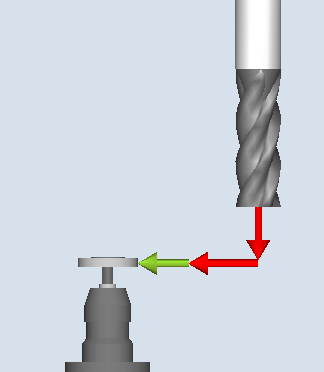
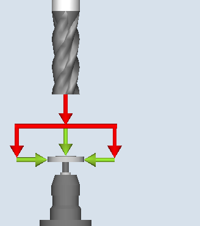
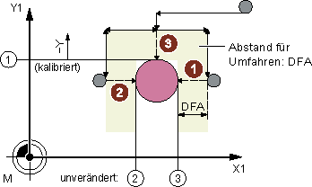
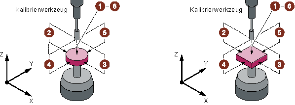
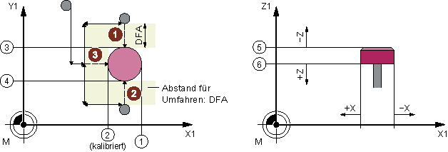

Funktion
Mit dieser Messvariante kann ein Werkzeugmesstaster maschinenbezogen oder werkstückbezogen abgeglichen (kalibriert) werden.
Es wird ohne Erfahrungs- und Mittelwert gerechnet.
Messprinzip
Mithilfe des Kalibrierwerkzeugs werden die aktuellen Abstandsmaße zwischen Maschinennullpunkt (maschinenbezogener Abgleich) bzw. Werkstücknullpunkt (werkstückbezogener Abgleich) und Werkzeugmesstaster-Triggerpunkt ermittelt. Die Positionierung des Kalibrierwerkzeugs zum Messtaster erfolgt durch den Zyklus.
| Hinweis |
|
Bei der Verwendung einer Scheibe als Messtastertyp und den Abgleichvarianten „achsweise“ bzw. „komplett – mit eingeschränkten Anfahrrichtungen in der Ebene“ sind die Positionen des Messtasters in der Ebene in den Settingdaten genau voreinzutragen, um anschließend ein genaues Messen zu gewährleisten. Weitere Informationen finden Sie im Inbetriebnahmehandbuch SINUMERIK Operate |
|  Abgleich: Messtaster (CYCLE971), achsweise |  Abgleich: Messtaster (CYCLE971), komplett |
Abgleich achsweise
Beim Abgleich "achsweise" wird der Messtaster in der parametrierten Messachse und Messrichtung abgeglichen (kalibriert). Der Antastpunkt in der Versetzachse kann zentriert werden. Dabei wird zuerst die tatsächliche Mitte des Werkzeugmesstasters in der Versetzachse ermittelt, bevor in der Messachse abgeglichen wird.
① | Allgemeines SD54627 $SNS_MEA_TP_TRIG_MINUS_DIR_AX2 |
② | Allgemeines SD54626 $SNS_MEA_TP_TRIG_PLUS_DIR_AX1 |
③ | Allgemeines SD54625 $SNS_MEA_TP_TRIG_MINUS_DIR_AX1 |
Abgleich Messtaster (CYCLE971) mit Versetzachse, Beispiel G17: Mitte bestimmen in X, Kalibrieren in Y
Abgleich komplett
Beim Abgleich "komplett" wird der Werkzeugmesstaster automatisch kalibriert. Der Messzyklus ermittelt mithilfe des Kalibrierwerkzeugs die Werkzeugmesstaster-Triggerpunkte in allen Achsen bzw. Achsrichtungen, in denen ein Anfahren an den Messtaster möglich ist.
Weitere Informationen: Inbetriebnahmehandbuch SINUMERIK Operate
$SNS_MEA_TP_AX_DIR_AUTO_CAL bzw. SD54647 $SNS_MEA_TPW_AX_DIR_AUTO_CAL.
Die Werkzeugachse (bei G17: Z) muss in Minus-Richtung immer anfahrbar sein. Andernfalls ist kein Abgleich "komplett" möglich. Es wird mit dem Abgleich in der 3. Achse begonnen, danach die Achsen der Ebene. In den folgenden Bildern ist der Abgleich "komplett" (Beispiel: G17) dargestellt.
Werkzeugmesstaster Ausführung Scheibe und Würfel
Vor dem ersten Kalibriervorgang in der Ebene, z. B. Plus-Richtung der 1. Achse, wird in der anderen Achse (2. Achse), soweit ein Anfahren in dieser Achse an den Taster möglich ist, die genaue Mitte des Messtasters bestimmt. Hierzu werden zusätzliche Verfahrbewegungen in der Ebene ausgeführt.
① | Allgemeines SD54625 $SNS_MEA_TP_TRIG_MINUS_DIR_AX1 |
② | Allgemeines SD54626 $SNS_MEA_TP_TRIG_PLUS_DIR_AX1 |
③ | Allgemeines SD54627 $SNS_MEA_TP_TRIG_MINUS_DIR_AX2 |
④ | Allgemeines SD54628 $SNS_MEA_TP_TRIG_PLUS_DIR_AX2 |
⑤ | Allgemeines SD54629 $SNS_MEA_TP_TRIG_MINUS_DIR_AX3 |
⑥ | Allgemeines SD54630 $SNS_MEA_TP_TRIG_PLUS_DIR_AX3 |
Bestimmung der Messtastermitte in der 2. Achse der Ebene, Kalibrieren +X
Voraussetzungen
Die genaue Länge und Radius des Kalibrierwerkzeugs müssen in einem Werkzeugkorrekturdatensatz hinterlegt sein. Diese Werkzeugkorrektur muss beim Aufruf des Messzyklus aktiv sein.
Werkzeugtyp:
Kalibrierwerkzeug (Typ 725)
Fräswerkzeug (Typ 1xy)
Die Bearbeitungsebene G17 oder G18 oder G19 muss vor Zyklusaufruf festgelegt sein.
Die ungefähren Koordinaten des Werkzeugmesstasters sind vor Kalibrierbeginn in den allgemeinen Settingdaten einzutragen (weitere Informationen finden Sie im Inbetriebnahmehandbuch SINUMERIK Operate).
Diese Werte dienen zum automatischen Anfahren an den Messtastern mit dem Kalibrierwerkzeug und dürfen im Betrag nicht mehr als der Parameterwert TSA vom Istwert abweichen.
Der Messtaster muss innerhalb des Gesamtweges 2 · DFA erreicht werden.
Ausgangsposition vor dem Messen
Beim Abgleich "achsweise" errechnet sich der Zyklus aus der Startposition den Anfahrweg zum Messtaster und erzeugt die entsprechenden Verfahrsätze. Es muss gewährleistet sein, dass ein kollisionsfreies Anfahren möglich ist.

① | Allgemeines SD54626 $SNS_MEA_TP_TRIG_PLUS_DIR_AX1 |
② | Allgemeines SD54625 $SNS_MEA_TP_TRIG_MINUS_DIR_AX1 |
Startpositionen für den Abgleich in der Ebene, Beispiel: G17
| Hinweis |
Kalibrieren in der 3.Achse der MessebeneIst der Werkzeugdurchmesser größer, so wird das Kalibrierwerkzeug um den Werkzeugradius versetzt zur Mitte auf den Messtaster positioniert. Abzüglich wirkt der Wert des Versatzes. |
Beim Abgleich "komplett" sollte die Position vor Zyklenaufruf so gewählt werden, dass ein kollisionsfreies, mittiges Anfahren um den Messweg DFA über der Messtastermitte möglich ist. Die Achsreihenfolge für die Anfahrbewegung ist erst die Werkzeugachse (3. Achse) und danach die Achsen der Ebene.
Position nach Messzyklus-Ende
Beim Abgleich "achsweise" steht das Kalibrierwerkzeug im Abstand des Messweges DFA gegenüber der Messfläche.
Beim Abgleich "komplett" steht das Kalibrierwerkzeug im Abstand des Messweges DFA über der Mitte des Messtasters.